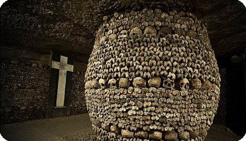
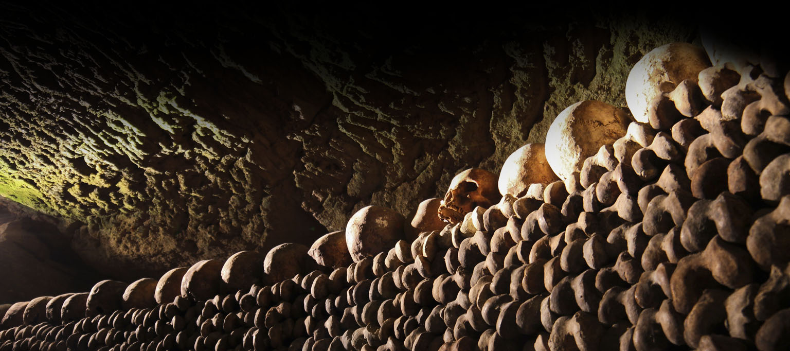
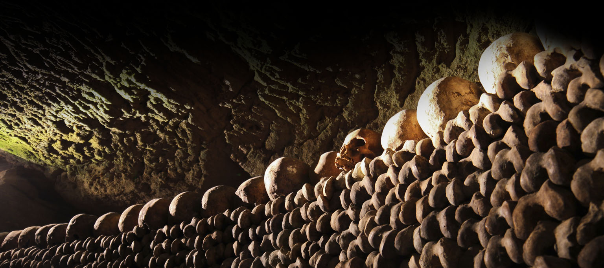

{kind=link}
![ Катакомбы  Катакомбы (Catacombs) встречают каракулями: «Внимание! Здесь Царство смерти». Это предостережение наводило страх на немецких солдат во времена Второй мировой: легковерные оккупанты считали, что дырявящие землю туннели кишат ужасными боевиками Сопротивления. Теперь же это нехитрое послание приглашает вас сойти по извилистым и тесным путям в главный парижский оссуарий. Хранилище костей возникло в 1768 г., когда сюда начали переносить кости с пресловутого кладбища Невинных (Cimetière des Innocents): дело в том, что продукты разложения останков исподволь просачивались в погреба главного рынка Лез-Алль, привлекая несметные сонмы прожорливых крыс. Мириады человеческих костей разложены здесь не по принадлежности, а по категориям: ряды черепов, горы берцовых костей, стопки спинальных дисков. Похоже, что к костям тут относятся как к своего рода материалу для диковинных художественных произведений: вот, к примеру, сердечко, выложенное из черепов. Жутковато, что и говорить: вы невольно понимаете и ощущаете, что человек (значит, и вы тоже) ... смертен. Среди прочих костей, тут есть и те, что принадлежали одному из вождей революции, графу Мирабо (1749- 1991 ), и сатирическому писателю 16 в. Франсуа Рабле (1490 1553); их перенесли сюда из упраздненною кладбища при церкви Сен-Поль-Сен-Луи; здесь же и остатки скелета прославленной куртизанки мадам Помпадур ( 1721 -1764); как же так, за что ее скинули волну кучу со всяким сбродом? И это после того, как она жизнь свою жертвенно положила на ублажение Людовика XV. Приготовьтесь то и дело спускаться и подниматься по лестницам и ступенькам и подолгу блуждать под землей; получше обуйтесь не то, не ровен час, ноги промочите. Но вот темнота вам не угрожает - лампочек в туннелях вполне достаточно. Экскурсоводы говорят только по-французски. Die Pariser Katakomben waren nicht wie die im alten Rom Zuflucht verfolgter Christen. Sie entstanden erst Ende des 18. Jh., als man sich endlich entschloss, den großen Friedhof der Unschuldigen Kinder neben den Markthallen aufzulösen, da dieser einen gefährlichen Infektionsherd darstellte. Von 1787 bis 1860 überführte man nachts die Gebeine, auch von den vielen anderen Friedhöfen der Stadt hierher.c="img/91.jpg" alt="" class="type1-img1"/>1 pl. Denfert-Rochereau. Montparnasse 01-43-22-47-63 www.paris.fr/musees €5, за экскурсии с гидами, дающими объяснения по-французски, дополнительно взимается €3 со среды по воскресенье - с 9.00 до 16.00 по вторникам - с 11.00 до 16.00 или RHR: Denfert-Rochereau.](preview://img/91b.jpg){kind=link}
Катакомбы
Катакомбы (Catacombs) встречают каракулями: «Внимание! Здесь Царство смерти». Это предостережение наводило страх на немецких солдат во времена Второй мировой: легковерные оккупанты считали, что дырявящие землю туннели кишат ужасными боевиками Сопротивления. Теперь же это нехитрое послание приглашает вас сойти по извилистым и тесным путям в главный парижский оссуарий. Хранилище костей возникло в 1768 г., когда сюда начали переносить кости с пресловутого кладбища Невинных (Cimetière des Innocents): дело в том, что продукты разложения останков исподволь просачивались в погреба главного рынка Лез-Алль, привлекая несметные сонмы прожорливых крыс. Мириады человеческих костей разложены здесь не по принадлежности, а по категориям: ряды черепов, горы берцовых костей, стопки спинальных дисков. Похоже, что к костям тут относятся как к своего рода материалу для диковинных художественных произведений: вот, к примеру, сердечко, выложенное из черепов. Жутковато, что и говорить: вы невольно понимаете и ощущаете, что человек (значит, и вы тоже) ... смертен. Среди прочих костей, тут есть и те, что принадлежали одному из вождей революции, графу Мирабо (1749- 1991 ), и сатирическому писателю 16 в. Франсуа Рабле (1490 1553); их перенесли сюда из упраздненною кладбища при церкви Сен-Поль-Сен-Луи; здесь же и остатки скелета прославленной куртизанки мадам Помпадур ( 1721 -1764); как же так, за что ее скинули волну кучу со всяким сбродом? И это после того, как она жизнь свою жертвенно положила на ублажение Людовика XV. Приготовьтесь то и дело спускаться и подниматься по лестницам и ступенькам и подолгу блуждать под землей; получше обуйтесь не то, не ровен час, ноги промочите. Но вот темнота вам не угрожает - лампочек в туннелях вполне достаточно. Экскурсоводы говорят только по-французски.
Die Pariser Katakomben waren nicht wie die im alten Rom Zuflucht verfolgter Christen. Sie entstanden erst Ende des 18. Jh., als man sich endlich entschloss, den großen Friedhof der Unschuldigen Kinder neben den Markthallen aufzulösen, da dieser einen gefährlichen Infektionsherd darstellte. Von 1787 bis 1860 überführte man nachts die Gebeine, auch von den vielen anderen Friedhöfen der Stadt hierher.c="img/91.jpg" alt="" class="type1-img1"/>1 pl. Denfert-Rochereau. Montparnasse
01-43-22-47-63
www.paris.fr/musees
€5, за экскурсии с гидами, дающими объяснения по-французски, дополнительно взимается €3
со среды по воскресенье - с 9.00 до 16.00 по вторникам - с 11.00 до 16.00
или RHR: Denfert-Rochereau.